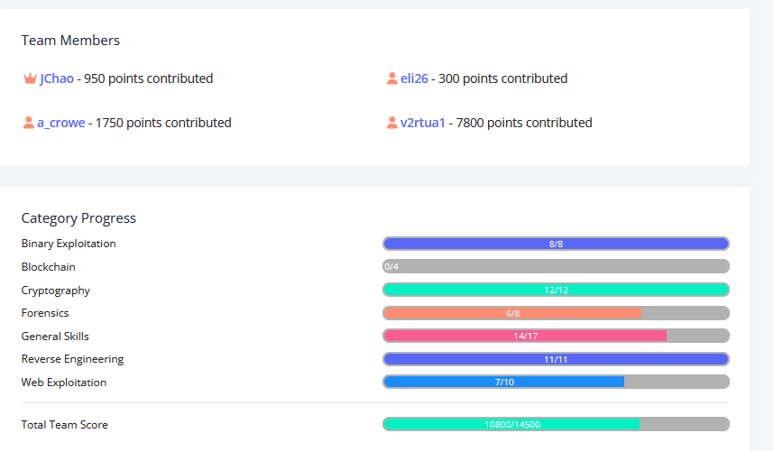

01Grade 11 / Leadership
CTF Leadership & Binary Exploitation
Founding Member and Core Team Leader
Helped launch the school’s first competitive cybersecurity team and grow membership to 30+ students. Built a team website, trained teammates in CTF problem-solving, reverse engineering, and binary exploitation, and led the team in picoCTF. 7,800 individual points — picoCTF 2026


Selected technical work
Stack canary disclosure, heap object lifetime, and packet-data reconstruction.
Read three personal CTF write-ups →